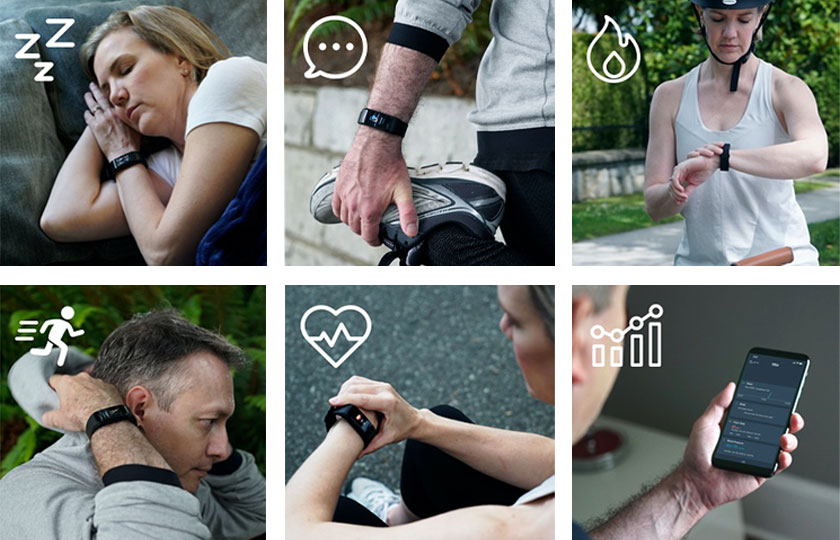

by SAMANTHA GABELSTechnology
This easy to use smartwatch has gone viral across the United States. It's selling out and we wanted to find out why...
Forever, big tech companies have been ripping their customers off with outrageous prices on new gadgets. These product come to market with barely any new features and higher prices. But now, one tech startup is turning the $5 billion smartwatch market upside down.
This company is KoreTrak and it's found a way to offer feature packed (even geeks agree) smartwatches at a fraction of the price to consumers.
Meet KoreTrak.
Founded by a team of renegade engineers who are experts in health tech. They joined forces with a team of watch designers to create the KoreTrak.
A Simple Mission: KoreTrak was made to combine the benefits of a digital watch, fitness band, health monitor and wireless bluetooth in an attractive luxury case.
It feels natural on your wrist, is lightweight and more comfortable than most hard metal luxury watches we tried.
Like to swim, run outdoors or accidentally bang a door jam? Not to worry, the rugged shell and scratch resistant touchscreen glass, makes this watch nearly indestructible.
The KoreTrak is not just any smartwatch. Yes, alert phone calls, count steps, monitoring sleeping patterns, message alerts, etc. all great to have. But in my opinion, the KoreTrak has a particular set of health features that makes it the next generation of smartwatch.
These feature stand out from other competitors because they could potentially save your life... what is that worth to you?
The green laser hiding behind the watch is the secret.
It can measure your blood pressure, heart rate, blood oxygen and calculate your beats per minute (BPM). All live, in real-time.
It can even monitor your heart.

Think this doesn't apply to you? Heart disease is a silent killer... If you have it, you probably won't realize that something is wrong before it's too late. It is the leading cause of death for adults in the United States. Even if you lead a healthy life style you could be at risk...
Just by wearing KoreTrak you can monitor your heart and overall health. Get some peace of mind knowing that you may learn about problems early, and possibly seek medical help before it's too late...
This is why the KoreTrak will be the best selling smartwatch of 2020. No other watch is this advanced, it could literally save your life one day!
More than you might suspect!
When looking at reviews there are a few features that stand out as the reason 1000s of users give this watch 5-star reviews:
✅Heart Rate & Blood Pressure monitoring -Priceless 24/7 health monitoring
✅IP67 Waterproof -Wear yours while swimming or in the shower
✅Large Color 1.08" Display -HD clear, easy-to-read display, oversized for easy touch control
✅Step counter -Set goals, hit them and lose weight fast
✅Sleep Monitoring -Measures the physiological signals of your body, understand your lifestyle
✅ Calorie Monitoring -Incredibly useful if you are trying to lose, maintain or even gain weight
✅ Alarm Reminder -You'll never forget your anniversary—or your dentist appointment again
✅ Incoming Call Notifications -Keep your phone safe in your pocket and lets you know about incoming calls.
✅ State-of-the-art Fitness tracking -Record your workouts and get fit
✅ Long Standby -Long life battery, super-efficient, less annoying recharges
✅ Sedentary Warning -Tells you when to sit less and move more
✅ Great Styling -Premium looking smartwatch.
✅ Anti-lost -Call your lost phone from your KoreTrak watch to find it fast
✅ Take a photo -Use your KoreTrak watch to take a photo on your smartphone
✅ Sync to both iPhone and Android -Supports IOS and Android
and there is even more!
For nearly all of us, these are the most important features. They made it so you can be always up to date and safe.
KoreTrak is essentially a premium smartwatch. You get all the features of a high quality smartwatch WITH the innovative health features.
It feels like having a personal trainer, assistant, on your wrist!
"I just love this smartwatch and was seriously impressed with its functions vs the price. I have arrhythmia so I needed the most accurate health smart watch and I'm glad I've found one. Now I can keep complete track of my health and always be in style." - Gerald J.

"It's so easy to use and fantastic build quality. This is smartwatch for those who care about their health but want something simple to use. This KoreTrak looks 100x better than others and does all the same stuff, plus the heart monitoring alarms... and it's cheaper. You will not regret having this on your wrist. KoreTrak must be the bargain of the century." - Jason L.
"Beautiful beautiful watch. Fits good and you can see and feel the workmanship. I use this watch for my swimming workouts three times a week and I can't imagine my life without it. The price amazed me, what a bargain. " - John S.
If you look at the features of the KoreTrak it would’t be surprising to see a price tag of up to $500. Which would still be lower than most of its competitors (some cost over $1,000).
That’s why we were stunned to learn the company sells this watch for just $49 (thanks to a 50% promo ending soon).
Click here to claim a discounted KoreTrak (if it's still available) >>
That's a small price to pay, for a 24/7 heart rate monitoring device!
Since KoreTrak is a direct-to-consumer brand, they spend no money on advertising.
They also only sell Online so they can cut out any middle-men (like retailers) who just jack up the prices the consumer pays.
When you buy from a big brand, you aren’t only paying for the product, you are paying for all the enormous costs they have as a company.
You’re helping to pay their rent, their CEO’s salary, their advertising cost, etc.
KoreTrak is investing big in their first time buyers.
By offering such a big discount, they know once people try their watches they will get a lot of positive reviews and free social media attention! The best advertising is happy customers, word-of-mouth!
Click here to claim a discounted KoreTrak (if it's still available) >>
Just be aware they will go back to full price after this promotion ends.
The time to buy the KoreTrak is now, this discount won't last long and it's selling like crazy.
If you have never owned a smartwatch - the KoreTrak is the perfect first time model.
The promotion price is amazing for a device this high-level. We say, definitely, pick one up before they go... It's a no-brainer!
It also makes an amazing present from family, friends, or coworkers. They’ll think you spent a ton of money on them.
Get your KoreTrak from the official website here.
**UPDATE: – Since the launch of the KoreTrak has been so popular that they have decided to extend their first-time buyer 50% off discount. They only ask that you tell your family & friends how much you love your KoreTrak.